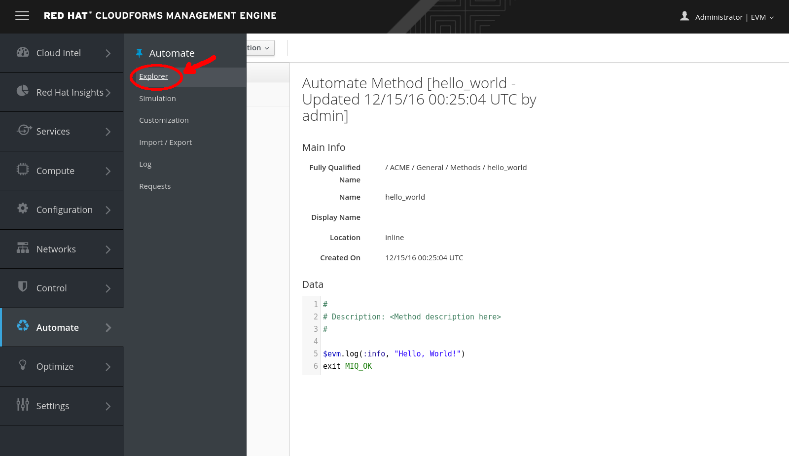
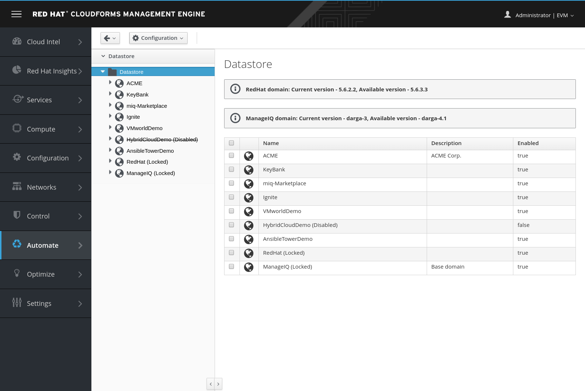

Exercise 1.17 - Introduction to the Automate Datastore
Exercise Description
In this exercise, you will learn about scripting actions, used to control automation datastore functions.
When we use the Automate capability of CloudForms, we write scripts in the Ruby language and use objects that the CloudForms Automation Engine makes available to us. The Automate model is arranged to provide an object oriented hierarchy to control automation functions. The model uses the following organizational units arranged in a hierarchy:
Datastore - The main organization unit that stores the entire model.
Domains - Domains act as collection of automation functions. Functions are executed depending on the order of Domain priority, which means a function in a Domain with a higher priority overrides the same functions specified in a lower-priority Domain. This allows CloudForms Management Engine to specify a core Domain (ManageIQ) but allow users to override automate functions with custom Domains. Each Domain contains a set of Namespaces.
Namespaces - Containers that organize and categorize functions of the model. Namespaces can contain child Namespaces as well as Classes.
Classes - Templates for a specific function of the model. Each Class uses a Schema to apply to Instances to populate with default values. Each class also can contain a set of methods.
Instances - An instance is a version of a class populated with initial configuration data. An instance can include a collection of any number of attributes, calls to methods, and relationships.
Methods - Methods are functions within the model. Methods use Ruby code to execute various operations needed for a Class.
Section 1: Exploring Automate
Go to Automate → Explorer.
 Automate Navigation
The first menu item that we see takes us to the Explorer. This is our visual interface into the Automate Datastore, and it contains the various kinds of Automate objects that we’ll use throughout this lab.
 Automate Explorer
Before we start our journey into learning CloudForms Automate, we’ll take a tour of the Automate Datastore to familiarize ourselves with the objects that we’ll find there.
Section 2: The Automate Datastore
The Automate Datastore has a directory-like structure, consisting of several types of organizational units arranged in a hierarchy:
Automate Datastore
Next, we’ll look at each type of object in more detail.
Section 3: Domains
A domain is a collection of namespaces, classes, instances, and methods. The ManageIQ project provides a single ManageIQ domain for all supplied automation code, while Red Hat adds the supplemental RedHat domain containing added-value code for the CloudForms product. Both the ManageIQ and RedHat domains are locked, indicating their read-only nature, but we can create new domains for our own custom automation code.
Organizing our own code into custom domains greatly simplifies the task of exporting and importing code (simplifying code portability and reuse). It also leaves ManageIQ or Red Hat free to update the locked domains through minor releases without fear of overwriting our customizations.
<div class="panel-body">
<p>User-added domains can be individually enabled or disabled and can be ordered by priority such that if code exists in the same path in multiple domain; for example, <em>/Cloud/VM/Provisioning/StateMachines</em>. The code in the highest-priority enabled domain will be executed.</p>
Step 1. We can change the priority order of our user-added domains using the:
Configuration → Edit Priority Order of Domains menu
Edit priority
Step 2. Try using the up and down arrows to switch the priority of a domain, then save.
<div class="panel-body">
<p>We can export domains using rake from the command line and import them either using rake or from the WebUI. Using rake enables us to specify more import and export options. A typical rake import line is as follows:</p>
<a data-toggle="collapse" href="#collapse55383588829369538f096cc635fc0802" class="collapsed">
Copying Objects Between Domains
</a>
</h4>
<div class="panel-body">
<h4 id="customizing-code-in-the-domain">Customizing code in the domain</h4>
We frequently need to customize code in the locked RedHat or ManageIQ domains — for example, when implementing our own custom VM placement method. Fortunately, we can easily copy any object from the locked domains into our own, using the following steps.
Step 1. Configuration → Copy this Class
Copying a class
Step 2. When we copy an object, such as a class, we are prompted for the From and To domains.
Step 3. We can optionally deselect “Copy to same path” d specify our own destination path for the object.
Specifying the destination domain and path
</div>
<a data-toggle="collapse" href="#collapse196a17def2f35f432d8a1e048b4ee865" class="collapsed">
Importing Old Format Exports
</a>
</h4>
<div class="panel-body">
<p>Domains were a new feature of the Automate Datastore in CloudForms 3.1. All factory-supplied and user-created automation code was contained in a common structure prior to the CloudForms 3.1 release. This made updates difficult when any user-added code was introduced. User-supplied modifications needed to be exported and reimported/merged whenever an automation update was released.</p>
To import a Datastore backup from a CloudForms 3.0 and prior format Datastore, we must convert it to the new Datastore format first, like so:
A namespace is a folder-like container for classes, instances, and methods, and is used purely for organizational purposes. We create namespaces to arrange our code logically, and namespaces often contain other namespaces.
Namespaces
Section 5: Classes
A class is similar to a template: it contains a generic definition for a set of automation operations. Each class has a schema that defines the variables, states, relationships, or methods that instances of the class will use.
The Automate Datastore uses object-oriented terminology for these objects. A class is a generic definition for a set of automation operations, and these classes are instantiated as specific instances.
The classes that we work with in the Automate Datastore are not the same as Ruby classes that we work with in our automation scripts.
<div class="panel-body">
<p>A <em>schema</em> is made up of a number of elements, or <em>fields</em>, that describe the properties of the class. A schema often has just one entry—to run a single method—but in many cases it has several components. The following shows the schema for a <em>placement</em> class, which has several different field types.</p>
A more complex schema
</div>
<a data-toggle="collapse" href="#collapse78b35ffadd745ae80f97ce4d85b421f6" class="collapsed">
Adding or Editing a Schema
</a>
</h4>
<div class="panel-body">
<blockquote>
Go to Configuration → Edit selected schema.
Edit selected schema
We add or edit each schema field in the schema editor by specifying the field type from a drop-down list.
Edit field
Each field type has an associated data type, which is also selectable from a drop-down list.
Edit field type
We can define default values for fields in a class schema. These will be inherited by all instances created from the class but can be optionally overridden in the schema of any particular instance.
<div class="panel-body">
<p>One of the schema field types is a <em>relationship</em>, which links to other instances elsewhere in the Automate Datastore. We often use relationships as a way of chaining instances together, and relationship values can accept variable substitutions for flexibility.</p>
An instance is a specific instantiation or “clone” of the generic class and is the entity run by the Automation Engine. An instance contains a copy of the class schema but with actual values of the fields filled in.
Single class definition with three instances
Section 7. Methods
A method is a self-contained block of Ruby code that gets executed when we run any automation operation. A typical method looks like this:
## Description: This method checks to see if the VM has been powered off or suspended.## Get vm from root objectvm = $evm.root['vm']if vm
power_state = vm.attributes['power_state'] ems = vm.ext_management_system
$evm.log('info', "VM:<#{vm.name}> on provider:<#{ems.try(:name)} has Power \
State:<#{power_state}>")
# If VM is powered off or suspended exitif%w(off suspended).include?(power_state)
# Bump State $evm.root['ae_result']='ok'elsif power_state =="never"# If never then this VM is a template so exit the retirement state machine $evm.root['ae_result']='error'else $evm.root['ae_result']='retry' $evm.root['ae_retry_interval']='60.seconds'endend
Methods can have one of three location values: inline, built-in, or URI. In practice most of the methods that we create are inline methods, which means they run as a separate Ruby process outside of Rails.
Summary
In this lab exercise we’ve learned about the fundamental objects or organizational units that we work with in the Automate Datastore: domains, namespaces, classes, instances, and methods.
We are now ready to use this information to write our first automation script!